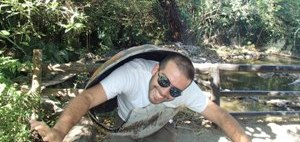

Biólogo. Alberto Alfieri Benjamín Casazza Ayluardo
Mi trabajo en Mercado VerdePrincipalmente es logar que en la página cada dia existan mas proveedores y que sus productos sean amigables con el ambiente.
Por otro lado mi trabajo en Placer Pulposo
Se puede resumir en las siguientes actividades:
Cocina:
Supervisión de la prepacion de los alimentos
Business Manager:
Elaboracion de planes de negocio para la busque de inversion y desarrollo del financiamiento del proyecto
Técnica:
Mantenimiento y desarrollo de nuestra página
Placer Pulposo
Programa Universitario de Medio Ambiente, Universidad Nacional Autónoma de México; Asesor de proyectos
Actividades realizadas
Organización de eventos para temas de educación ambiental y difusión de la ciencia.
Hacer propuestas para la implementación de lineamientos para el manejo sustentable de la UNAM.
Participar en la implementación de programas de difusión universitaria en temas de cuidado y manejo ambiental.
Depurar información de forma crítica y objetiva para la toma de decisiones con herramientas de Excel y bases de datos.
Manejar base de datos para el análisis de información para el manejo de residuos en Ciudad Universitaria.
Participar en la propuesta de instalación y ejecución del nuevo sistema de incentivos de la UNAM en temas de sustentabilidad.
Formación Académica
Licenciatura en Biología, Facultad de Ciencias, UNAM, Tesis "Diagnóstico del manejo de residuos peligrosos, en algunas de las dependencias y entidades de ciudad universitaria y propuesta de gestión, en función de la fuente de su generación"

Mis Gustos Personales
Reservoir Dogs
Esta es mni pelicula favorita por que me gustan las peliculas del director Tarantino